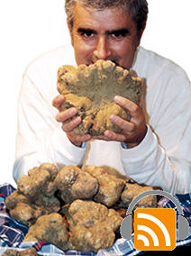

The truffle (tartufo in Italian) is a rare type of edible mushroom, or fungus that develops underground in relation to and dependent on the root of a tree. In ancient times truffles were considered the food of the Gods, with powerful aphrodisiac properties, much favoured by the passionate Jove. The subject matter expert of this podcast is Mauro Mencaroni of Giuliano Tartufi, an Italian shop specialized in truffle products. He'll share some interesting insights about this very expensive garnish. Please note that this interview is conducted in Italian. We'd love to hear your feedback if you like us to continue producing from time to time some podcasts in Italian too.